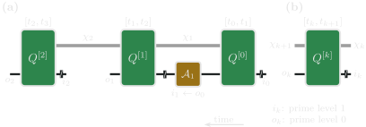

Construct a process tensor
A process tensor stores how an open system responds to a sequence of operations. This page builds that object for one spin coupled to one truncated boson. The spin is the system we will probe. The boson is the bath.
The next tutorial keeps this process tensor fixed and changes the experiment. Vectorisation is assumed only where a bath state is stored; see Liouville-Space Basics for that conversion.
Setup
using ITensors
using ProcessTensors
using ITensors.Ops: Exact, TrotterSpin–boson ingredients
The model is a spin–boson Hamiltonian with one truncated oscillator:
\[H_S = h S^x, \qquad H_B = \omega a^\dagger a, \qquad H_{SB} = g S^z (a + a^\dagger).\]
The boson starts in the vacuum $|0\rangle$. The displacement coupling $a + a^\dagger$ acts on that state. A number coupling $a^\dagger a$ would not: the vacuum is its ground state, so the interaction would be zero.
The system preparation is not part of the process tensor. It is supplied later, when the process is evaluated.
h = 0.6
ω = 1.1
g = 2.0
n_max = 2
system_sites = siteinds("S=1/2", 1)
H_S = OpSum()
H_S += h, "Sx", 1
system = spin_system(system_sites, H_S)
println("System:")
println(system)
@assert system isa SpinSystem
@assert length(system.sites) == 1System:
ProcessTensors.SpinSystem
sites: 1
space: Liouville
site dims: 4
dissipative: false
boson_sites = siteinds("Boson", 1; dim=n_max + 1)
boson_sites_L = liouv_sites(boson_sites)
H_B = OpSum()
H_B += ω, "N", 1
ψB0 = MPS(boson_sites, ["0"])
ρB0 = to_dm(ψB0)
ρB0_L = to_liouville(ρB0; sites=boson_sites_L)
H_SB = OpSum()
H_SB += g, "A", 1, "Sz", 2
H_SB += g, "Adag", 1, "Sz", 2
mode = bosonic_mode(boson_sites_L, H_B, ρB0_L; coupling=H_SB)
environment = bosonic_bath([mode])
println("Environment:")
println(environment)
@assert mode isa BosonicMode
@assert environment isa BosonicBath
@assert dim(only(boson_sites)) == n_max + 1Environment:
ProcessTensors.BosonicBath
modes: 1
space: Liouville
site dims: 9
bath Liouville dimension: 9
mode summary:
[1] BosonicMode(dim=9, H_terms=1, coupling_terms=2, n_max=8)
The coupling OpSum uses a local two-site convention: site 1 is the boson and site 2 is the spin. bosonic_mode stores the boson in Liouville space because the process tensor is built from density matrices. The Hilbert boson is truncated at occupations $n = 0, 1, 2$. The n_max field printed with the mode is one less than the Liouville dimension of that site, not this occupation cutoff.
Time grid and Dense construction
dt is the propagation interval between intervention slots. nsteps is the number of those intervals. Slot step is where an operation can act between the output of time step - 1 and the input of time step.
pt = build_process_tensor(system; environment, dt, nsteps, method=Dense())method=Dense() keeps the joint system–bath Liouville space. For this single truncated boson that space is small enough to exponentiate exactly. alg=Exact() builds that joint step directly, and sys_alg=Trotter{2}() places the free spin map symmetrically around it. The free spin map is already stored in the process tensor, so the default instrument between slots is an identity.
dt = 0.1
nsteps = 8
pt = build_process_tensor(
system;
environment=environment,
dt=dt,
nsteps=nsteps,
method=Dense(),
alg=Exact(),
sys_alg=Trotter{2}(),
progress=false,
verbose=false,
)
println("Spin–boson process tensor:")
println(pt)
@assert pt isa ProcessTensor
@assert pt.nsteps == nsteps
@assert pt.dt == dt
@assert pt.environment isa BosonicBathSpin–boson process tensor:
8-step ProcessTensor{SpinSystem, BosonicBath} | dt=0.1 | t_final=0.8 | maxlinkdim=9
system: SpinSystem(nsites=1, dissipative=false)
environment: BosonicBath(nmodes=1, D_bath=9, coupling=true)
core: MPO{Liouville}(length=8, linkdims=[9, 9, 9, 9, 9, 9, 9])
What the object stores


Core $Q^{[k]}$ owns the interval $[t_k, t_{k+1}]$. The intervention at the boundary joins output $o_{k-1}$ to input $i_k$.
Each time label has an input leg and an output leg. Input legs have prime level 1. Output legs have prime level 0. Both carry a tstep tag.
Intervention slot step connects the output leg at step - 1 to the input leg at step. For step = 1 that is output tstep=0 and input tstep=1.
println("Input leg at time 0:")
println(input_sites(pt, 0))
println("Output leg at time 0:")
println(output_sites(pt, 0))
out_prev, in_curr = coupling_times(pt, 1)
println("Legs connected by slot 1:")
println(out_prev)
println(in_curr)
@assert plev(only(input_sites(pt, 0))) == 1
@assert plev(only(output_sites(pt, 0))) == 0
@assert only(out_prev) == only(output_sites(pt, 0))
@assert only(in_curr) == only(input_sites(pt, 1))Input leg at time 0:
ITensors.Index[(dim=4|id=929|"Liouv,n=1,ptype=S=1/2,tstep=0")']
Output leg at time 0:
ITensors.Index[(dim=4|id=929|"Liouv,n=1,ptype=S=1/2,tstep=0")]
Legs connected by slot 1:
ITensors.Index[(dim=4|id=929|"Liouv,n=1,ptype=S=1/2,tstep=0")]
ITensors.Index[(dim=4|id=601|"Liouv,n=1,ptype=S=1/2,tstep=1")']
The bonds between cores carry the boson from one slot to the next. Dense() keeps that space uncompressed, so the bond dimension is the stored bath Liouville space. It is not a witness that the dynamics are non-Markovian.
println("Temporal bond dimension = ", maxlinkdim(pt.core))
@assert maxlinkdim(pt.core) > 1Temporal bond dimension = 9
Process-tensor contractions depend on exact ITensor index identity. Use the sites stored by the system, the boson, and the process tensor. Do not build a fresh index that only looks similar.
Dense and ACE constructors
build_process_tensor takes the same system, environment, and time grid for every builder. method selects the builder.
Dense(), used above, is the right choice when the joint bath space still fits in one exact step, as it does for this one oscillator.
ACE() is the other constructor. It joins independent bath modes one at a time and compresses the temporal bonds. cutoff is the relative singular-value threshold $\sigma_i > \varepsilon \sigma_1$. It is a convergence parameter, not a guaranteed error on an observable. The default compression schedule is :zipup_cpp, which truncates each temporal bond during the forward join in the C++ ACE order. :canonzip joins one mode fully, then truncates from the final time back to the initial time.
The same spin–boson model can be built with ACE. One mode is not compressed much, but the call and the printed object are the same ones used for a large bath.
pt_ace = build_process_tensor(
system;
environment=environment,
dt=dt,
nsteps=nsteps,
method=ACE(cutoff=1e-8, compression=:zipup_cpp),
sys_alg=Trotter{2}(),
progress=false,
verbose=false,
)
println("ACE process tensor:")
println(pt_ace)
@assert pt_ace isa ProcessTensor
@assert pt_ace.nsteps == nsteps
@assert pt_ace.dt == dtACE process tensor:
8-step ProcessTensor{SpinSystem, BosonicBath} | dt=0.1 | t_final=0.8 | maxlinkdim=9
system: SpinSystem(nsites=1, dissipative=false)
environment: BosonicBath(nmodes=1, D_bath=9, coupling=true)
core: MPO{Liouville}(length=8, linkdims=[4, 9, 9, 9, 9, 9, 3])
Building the process tensor is often the expensive step of the workflow. progress=true shows a transient bar while that build runs, and verbose=true keeps a short log of the major stages after it finishes. The defaults are progress=:auto and verbose=false. The calls on this page use progress=false so the rendered output stays a plain printout. See Advanced Usage for the combinations to use locally, in a notebook, or on a cluster.
Save the process tensor and reuse it
The expensive object is the temporal MPO. ITensorMPS writes that MPO to HDF5. The ProcessTensor wrapper itself is not an HDF5 type, so the file stores pt.core. Reading it back and passing the same system, bath, and time grid restores a process tensor whose site indices still match the original ones.
using HDF5
using ITensorMPS: MPO as ITensorMPO
pt_file = joinpath(tempdir(), "spin_boson_process_tensor.h5")
h5open(pt_file, "w") do file
write(file, "process_tensor", pt.core)
end
pt_core = h5open(pt_file, "r") do file
read(file, "process_tensor", ITensorMPO)
end
pt_loaded = ProcessTensor(pt_core, system, environment, dt, nsteps)
println("Loaded process tensor:")
println(pt_loaded)
println("Saved file: ", pt_file)Loaded process tensor:
8-step ProcessTensor{SpinSystem, BosonicBath} | dt=0.1 | t_final=0.8 | maxlinkdim=9
system: SpinSystem(nsites=1, dissipative=false)
environment: BosonicBath(nmodes=1, D_bath=9, coupling=true)
core: MPO{Liouville}(length=8, linkdims=[9, 9, 9, 9, 9, 9, 9])
Saved file: /tmp/spin_boson_process_tensor.h5
What stays fixed is this object: the spin, the boson, the coupling, the time grid, and the loaded tensor. What changes in the next tutorial is only the operations applied to the spin.
Explore a process with instruments prepares that spin, reads out trajectories and probabilities, and compares experiments on this same process.